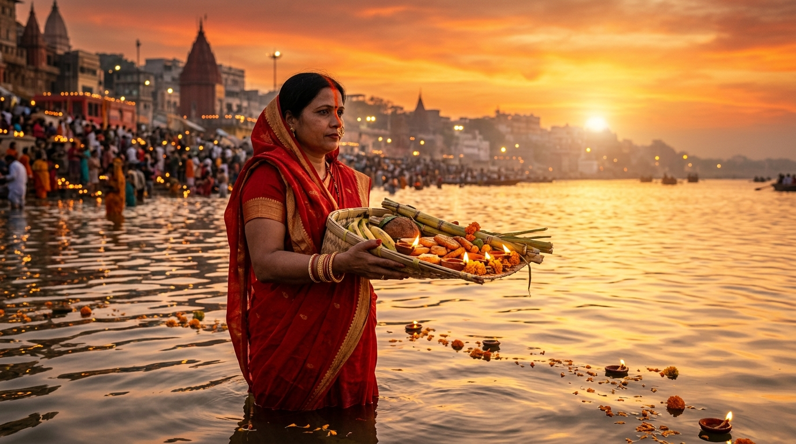
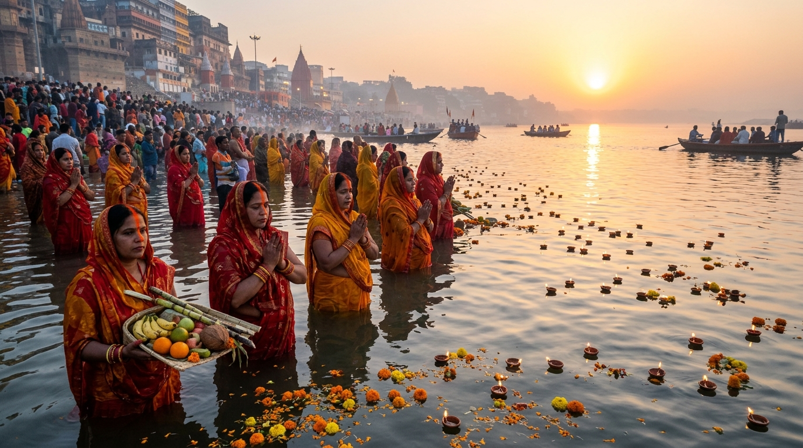
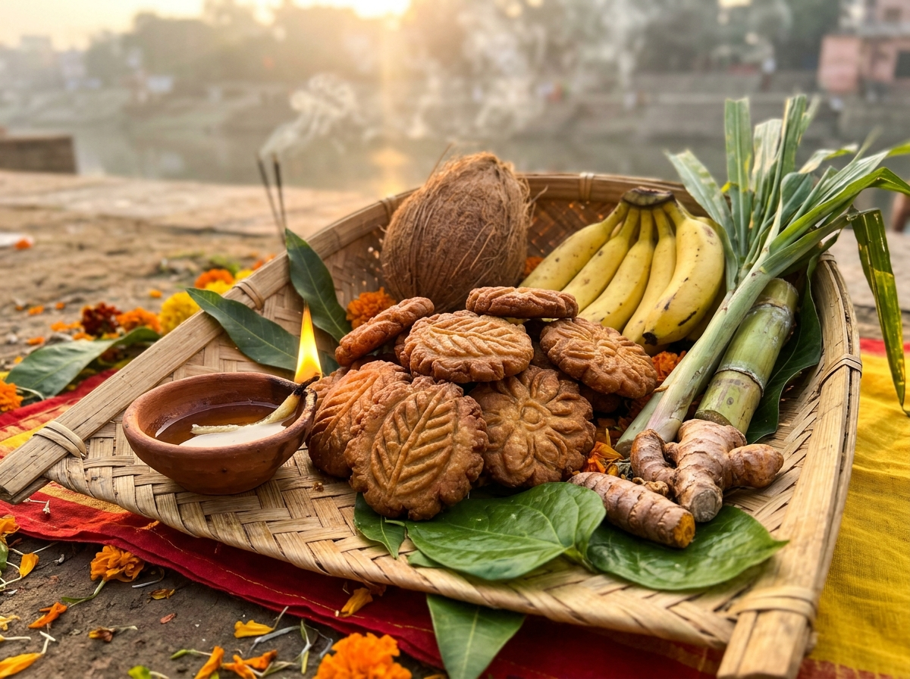

The Eternal Song of the
Sun & Holy Stream
An ancient Vedic communion of four days without middlemen or idols. Standing waist-deep in the flowing waters, devotees bow to both the setting and rising Sun with handmade bamboo supa, pure cow ghee, and unwavering devotion.
Counting down to Sandhya Arghya
The Sacred Virtual River Ghat
Wherever you are in the world, feel the gentle ripples of Maa Ganga. Light a sacred earthen diya, dedicate a prayer for your family, and watch it float among thousands of lamps offered by devotees across the globe.
The Four Sacred Days of Chhath
Each day represents a progressive ascension of internal purification, leading from culinary restraint to a strict 36-hour waterless fast (Nirjala Vrat), culminating in cosmic gratitude.

Why Chhath Honors the Setting Sun First
The Cycle of Respect & Grateful Farewell
While almost every civilization praises only rising glory, Chhath Puja is unique: on the third day (Sandhya Arghya), devotees first offer prayers to the setting Sun (Astachalagami Surya). It embodies the philosophical truth that endings are as sacred as beginnings, and that those who depart in warmth deserve equal reverence before greeting the dawn.
Arghya Muhurat & Solar Horizon
Exact solar timings for offering Sandhya Arghya and Usha Arghya across 20+ prominent cities in India, Nepal, and the global diaspora.
Patna (Ganga Ghats), Bihar
Astronomically computed for Kartik Shukla Shashthi 2026The Sacred Bamboo Supa Explorer
In Chhath Puja, nature itself is the deity and the offering. Click the glowing markers on the sacred Supa below to discover the botanical, spiritual, and Ayurvedic significance of each offering.

Khasta Thekua (ठेकुआ)
Sacred Essence: Gratitude for the golden harvest & solar warmth
Made from fresh whole wheat, cow ghee, and sugarcane jaggery pressed on wooden saancha moulds. It symbolizes the sweetness of devotion and uncompromised perseverance.
Explore Other Sacred Offerings:Authentic Chhath Mahaprasad Recipes
Prepared with the highest standards of Vedic purity (Pavitrata)—using mango firewood, new brass and clay vessels, and pure cow ghee. Use the serving scaler below to adapt ingredient quantities for your family or community ghat.
पारंपरिक खस्ता ठेकुआ
Traditional Bihari Khasta Thekua
The most sacred and revered prasad of Chhath Puja.
Pavitra Ingredients (Click to check off)
Sacred Step-by-Step Preparation:
Sacred Chhath Folk Geet Lounge
No Chhath Puja is complete without the haunting, soulful Bhojpuri melodies of Padma Shri Sharda Sinha. Enjoy synthesized meditative flute accompaniment along with complete lyrics in Devanagari, English transliteration, and spiritual meanings.
केलवा के पात पर उगेलन सूरजमल
Kelwa Ke Paat Par Ugelan Suraj Mal
Traditional Raga: Bhupali / DeshDevanagari Folk Lyrics (भोजपुरी / हिंदी)
English Transliteration
📖 Spiritual Meaning & Poetic Reflection:
Upon the green banana leaf, the radiant Sun rises with gentle grace...
Global Devotee Prarthana Wall
Connect with millions of devotees worldwide. Share your family blessings, village memories, or heartfelt gratitude to Bhagwan Surya. Every prayer posted here is preserved and celebrated.
Write Your Prayer to Chhathi Maiya & Surya Dev
Your message will appear on this wall and float as a radiant diya on the sacred virtual Ganges river above.
Global Chhath Ghat Directory & Meetups
Find verified, safe Chhath Puja ghats across India, Nepal, North America, the UK, and beyond—complete with safety facilities, clean water arrangements, and community volunteer contacts.
Vrati Preparation & Packing Assistant
A comprehensive, interactive checklist for families preparing for the Mahaparv. Check off items as you source them; your progress automatically saves in your browser.